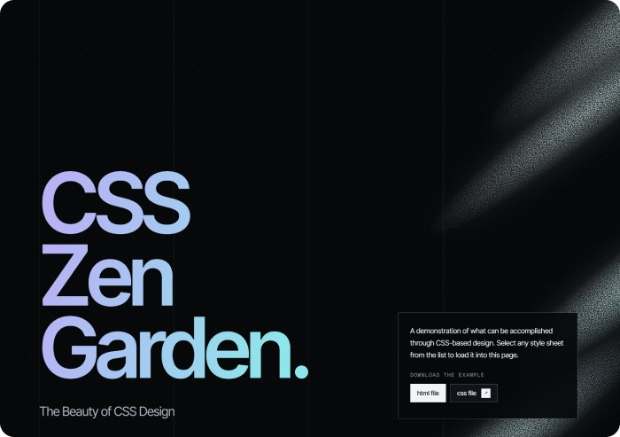

Felipe Oliveira — Product Designer

Projeto produtos digitais entre estratégia, interface e implementação.
Minha jornada com tecnologia começou em 2010, no suporte técnico de uma fábrica de software em Sorocaba. Foi lá que descobri o que era programação. De lá pra cá, passei por social media, design e desenvolvimento front-end (saudades, jQuery), até me achar como Product Designer em 2019, numa startup. Foi ali que vi que poderia usar toda essa bagagem pra criar produtos digitais relevantes e de impacto.
Atuar com design systems sempre foi um caminho natural. Minha vivência com front-end me mostrou cedo que componentes bem organizados e decisões claras de design são o que sustentam a escala.
Não basta desenhar produtos: precisamos desenhar produtos para serem construídos.


Trajetória
-
Tivita
Jun 2024 – Set 2026
Fintech + Health care. Fui o primeiro designer contratado na startup, atuei nas features iniciais ponta a ponta e na fundação do design system. Depois, atuei no módulo de automação de guias médicas, do atendimento ao fechamento de lotes, prototipando com apoio do Claude Code.
-
Inventa
Jul 2023 – Jun 2024
Retail tech + Marketplace B2B. Atuei no marketplace e em produtos internos de gestão de clientes, do discovery presencial com vendedores até a interface final.
Baixar case (PDF) ↗ (abre em nova aba) -
Olist
Ago 2021 – Jul 2023
E-commerce + Retail tech. Atuei no app do lojista, com notificações e ajustes rápidos de preço e estoque, e depois na integração com a Tiny, unificando onboarding e seleção de planos entre os dois ecossistemas.
Baixar case (PDF) ↗ (abre em nova aba) -
Stone
Dez 2020 – Ago 2021
Fintech. Atuei no design system e nas primeiras versões da dashboard da conta, Web e Mobile, onde lojistas gerenciavam cartões, Pix e contratação de seguros e empréstimos.
-
Meiuca
Out 2019 – Jun 2020
Design studio. Meu projeto principal foi o design system da XP Investimentos: 6 meses mapeando inconsistências entre produtos e construindo foundations e primeiros componentes para toda a companhia.
-
Goomer
Out 2018 – Out 2019
Foodtech + Retail tech. Atuei na ferramenta de gestão de cardápios digitais e na primeira fase dos totens de autoatendimento, com bastante discovery de campo para mapear a jornada dos restaurantes.
Side projects
Explorações de produto, UI e tecnologia. Fora do expediente.
-
Case em destaque
CiaTrans
Redesenhando a presença digital de uma das maiores transportadoras portuárias do Brasil.
Ver case completo ↗

-
Case em destaque · Em desenvolvimento
nosso+
Um app para casais construírem metas financeiras juntos. Em desenvolvimento.
Ver case completo ↗
-
Portfólio pessoal
Nathalia Geraldo
Portfólio pessoal para uma UX Designer com foco em pesquisa e sistemas.
Ver case completo ↗

-
2 versões
CSS Zen Garden
Duas interpretações visuais completamente diferentes para um clássico exercício de CSS puro.
Ver as duas versões ↗

-
(abre em nova aba)
Em desenvolvimento
usectt
Dashboard de gestão para profissionais de CTT. Em desenvolvimento.
Ver dashboard ↗
-
Implementação Framer
Onze
Site institucional para uma fintech de previdência privada, implementado em Framer.
Ver site ↗